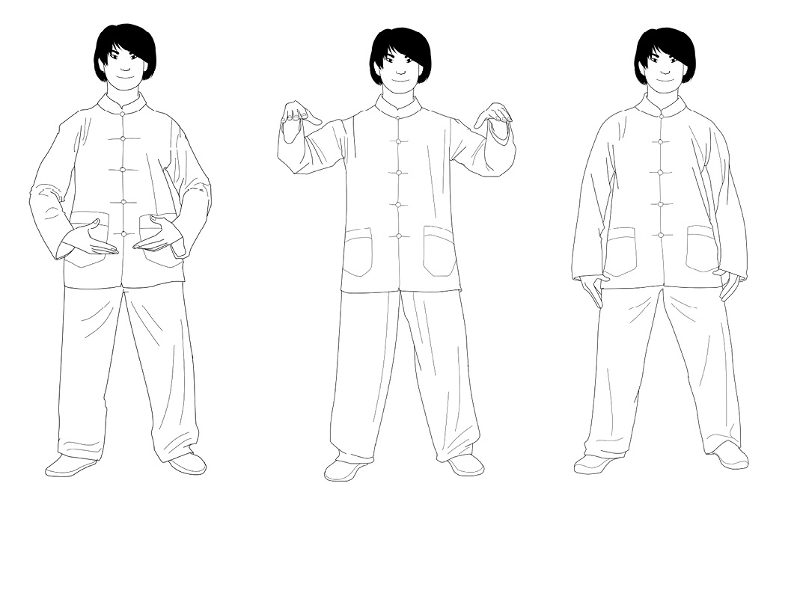

1. Starting from Earth posture, inhale as you bring your hands level with your shoulders, palms facing down.
2. As you exhale, lower your arms to rest at your sides, returning to the initial Wu Qi posture.

Shiatsu Created in Japan in the early twentieth century, principally for the treatment of arthritis, shiatsu also works on energy flow through the application of pressure with the thumbs and the palms of the hands. In combination with stretching and
breathing exercises, it seeks to create equilibrium among the different elements
of the body.
It is not important that a Tao Yin* have a name, is imitating something, or is engraved in jade. What is important is the technique and the essence of what is really practiced. Stretching and contracting, bending and lifting of the head, stepping, lying down, resting or standing, walking or stepping slowly, screaming or breathing—everything can be a Tao Yin.
—Ge Hong5
Breathe better, live longer
The book Xiuzhen shishu, known in the West as Ten Books on the Cultivation of
Perfection, dates back to the thirteenth century and is a compendium of materials
from diverse sources on developing the mind and body.
It quotes, among others, the celebrated Chinese doctor and essayist Sun Simiao, who lived during the sixth century. Sun Simiao was a proponent of a
technique called the Six Healing Sounds, which involves the coordination of
movement, breathing, and pronouncing sounds with the purpose of bringing our
souls to a place of calm.
The six sounds are:
Xu, pronounced like “shh” with a deep sigh, which is associated with the liver He, pronounced like “her” with a yawn, which is associated with the heart Si, pronounced like “sir” with a slow exhale, which is associated with the lungs Chui, pronounced like “chwee” with a forceful exhale, which is associated with the kidneys
Hoo, pronounced like “who,” which is associated with the spleen Xi, pronounced like “she, ” which connects the whole body
The following poem by Sun Simiao offers clues about how to live well
according to the season. It reminds us of the importance of breathing, and suggests that as we breathe, we visualize the organs associated with each of the healing sounds.
In spring, breathe xu for clear eyes and so wood can aid your liver.
In summer, reach for he, so that heart and fire can be at peace.
In fall, breathe si to stabilize and gather metal, keeping the lungs moist.
For the kidneys, next, breathe chui and see your inner waters calm.
The Triple Heater needs your xi to expel all heat and troubles.
In all four seasons, take deep breaths so your spleen can process food.
And, of course, avoid exhaling noisily; don’t let even your own ears hear you.
The practice is most excellent and will help preserve your divine elixir.
It might feel confusing to be presented with all the Eastern traditions we have introduced in this chapter. The takeaway is that they all combine a physical
exercise with an awareness of our breath. These two components—movement
and breath—help us to bring our consciousness in line with our body, instead of
allowing our mind to be carried away by the sea of daily worries. Most of the
time, we are just not aware enough of our breathing.